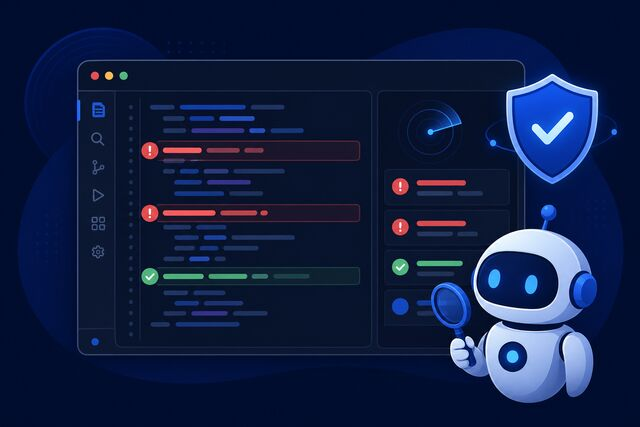
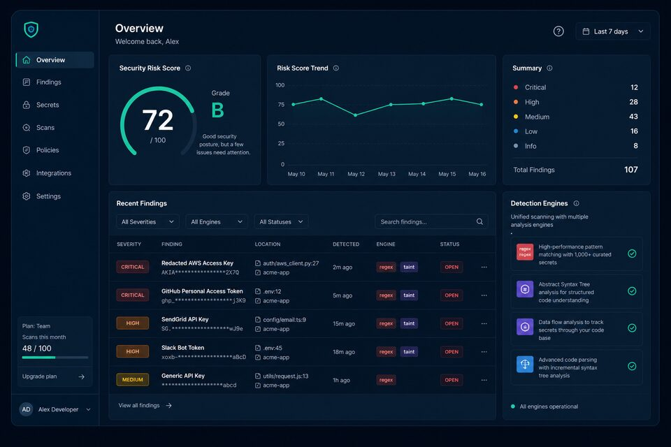
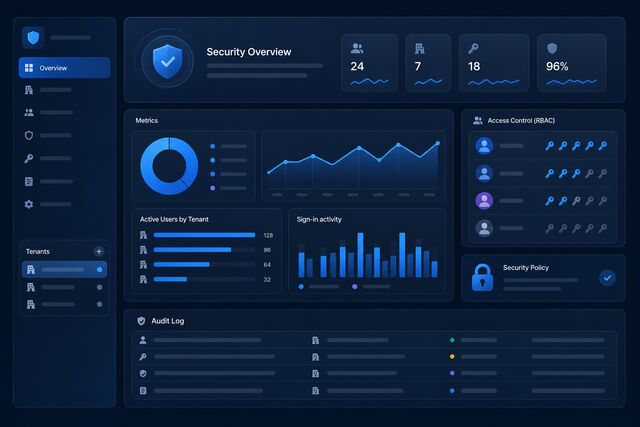

Agent-native review
MCP tools return redacted findings + remediations models can apply. No secret leakage into chat history.
Hybrid multi-language security for Cursor, Claude, and CI. Secrets, multi-hop taint, tree-sitter sinks, repo/PR scans, SARIF/SBOM, and enterprise policy ALLOW/DENY — all as MCP tools agents can call.

GuardRail sits between AI-generated patches and your main branch — same engines in the IDE and CI.

MCP tools return redacted findings + remediations models can apply. No secret leakage into chat history.
Python AST + multi-hop taint, tree-sitter for JS/Go/Java/Rust/C/C++, plus high-signal language grids.
Git diff mode, SARIF upload, SBOM export, policy packs that emit ALLOW/DENY for release control.

API keys/JWT, RBAC, path sandbox, quotas, audit logs, compliance evidence, Prometheus metrics.
Complementary analyzers reduce blind spots. Results are deduped so agents get signal, not noise.
Keys, tokens, PEM, TLS verify-off, shell injection patterns, provider prefixes.
eval aliases, shell=True, pickle, insecure YAML, SQL interpolation with line evidence.
Tracks untrusted data across assignments into SQL, command, eval, path, and SSRF sinks.
Structural sinks in Python, JS, Go, Java, C/C++, Rust — stronger than pure text search.
Org YAML/JSON rules and Python plugins without forking the core server.
Parallel walks, PR-only scans, incremental content-hash cache for monorepos.
Directories list tools. GuardRail is a full security workflow for agent-written code.
| Capability | Generic MCP toy | Cloud SAST only | GuardRail |
|---|---|---|---|
| Works inside Cursor / Claude MCP | ✓ | Often no | ✓ |
| Multi-hop taint + tree-sitter | — | Sometimes | ✓ |
| Secret redaction for agent chat | Rare | Varies | ✓ |
| SARIF + SBOM + PR diff mode | — | ✓ | ✓ |
| Self-host free / MIT core | Sometimes | — | ✓ |
| Enterprise RBAC + policy packs | — | $$$$ | ✓ included |
From IDE agents to production CI — one server, consistent verdicts.
Point Cursor / Claude / VS Code at python -m guardrail --mode stdio, or deploy on MCPize.
Agents call audit_code_safety or scan_git_diff on generated patches and pull requests.
Strict / SOC2 / PCI packs return ALLOW or DENY. Export SARIF and compliance evidence for audits.
Paste code or load a sample. The browser runs a high-fidelity demo engine with real GuardRail rule IDs. For production accuracy use the Python MCP/CLI.
Tip: edit the code and re-run. Secrets in excerpts are redacted.
Interactive demo engine
Ground truth CLI:
python -c "from guardrail.hybrid_scan import hybrid_scan; …"
· Record a 2‑min video
Self-host free forever. Monetize on MCPize with freemium → Pro → Enterprise.
Example messaging you can use in outreach — replace with real quotes as you get users.
“Finally an MCP that treats AI-generated patches like untrusted input.”
“Taint + tree-sitter in one agent tool beats pasting code into a random scanner.”
“SARIF in CI and the same checks in Cursor. One policy story for the team.”
Open source on GitHub. STDIO for IDEs. HTTP for dashboards and hosted gateways.
{
"mcpServers": {
"guardrail": {
"command": "python",
"args": ["-m", "guardrail", "--mode", "stdio"],
"cwd": "/path/to/guardrail-mcp",
"env": { "PYTHONPATH": "/path/to/guardrail-mcp" }
}
}
}
git clone https://github.com/SECRET4422/guardrail-mcp.git cd guardrail-mcp pip install -r requirements.txt export PYTHONPATH=$PWD python -m unittest discover -s tests -v python -m guardrail --mode stdio
Straight answers for buyers and security reviewers.
scan-repo, scan-diff, SARIF export, and the included GitHub Actions workflows without any IDE.Stars and reviews unlock marketplace trust (and help us ship faster).
Open-source core. Marketplace monetization. Enterprise controls when you need them.